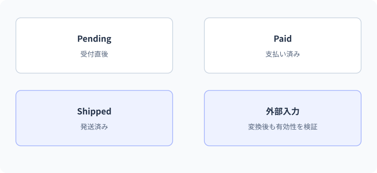

enum・タプル・拡張メソッド
注文状態を名前付きの値で表す。
この単元では、異なる三つの困りごとを扱います。状態の数字に名前を付けるenum、複数の結果を返すタプル、既存の型を読みやすく使う拡張メソッドを、役割ごとに分けます。
要点
- 状態をenumで表す
- 複数の戻り値と拡張メソッドを読める
public static bool HasText(this string? text) => ...;状態の数字へ名前を付ける
enum・タプル・拡張メソッドは、名前のない数値や長い補助コードを整理する道具です。ただし型名を付けただけで不正値が消えるわけではありません。適用範囲と限界を理解し、APIの契約を読みやすくします。
数字に名前を付ける
enumは関連する定数の集合です。TaskState.Todoと書けば、0だけより意図が伝わります。ただし(int)からキャストすると宣言していない値も表せるため、外部入力の検証が不要になるわけではありません。保存形式で番号を使うなら、順序変更による破壊を避けるため値を明示します。
enumは名前付き定数だが未定義値も存在する
enum Status { Unknown=0, Todo=1, Done=2 }は状態を名前で表します。整数をそのまま比較するより意図が明確です。ただし(Status)99のようなキャストで、宣言していない数値を持つことができます。既定値は通常0なので、0の意味を用意するか境界で検証します。
外部から受け取った文字列をEnum.TryParseで変換できても、それが宣言済みの値である保証とは分けて考えます。数値文字列が変換される場合もあるため、通常の単一状態ならEnum.IsDefinedなどで許可する値を確認します。Flags列挙型の複数ビット組み合わせは別の検証規則が必要です。
この例のTaskStateはTodo、Doing、Doneの順で、明示しなければ0、1、2になります。
0Todo
1Doing
2Done
99キャストできても定義済みの状態ではない
整数99をキャストできることと、アプリで使える状態であることは別です。外部から受け取る値には、名前付きの状態として有効かの確認が必要です。
複数の結果をまとめて返す
近い場所で使う複数の戻り値
(int Count, int Total)のようなタプルを返すと、関連する少数の値を簡単にまとめられます。分解代入でvar (count, total) = ...;と受け取れます。公開APIや多くの場所で使うデータに発展したら、名前のあるrecordなどへ切り出すと役割が伝わりやすくなります。
タプルは関連する少数の値を一時的に返す
(int Count,int Total)は二つの値を一つの戻り値として返せます。呼び出し側はresult.Countや分解代入のvar(count,total)で読み取れます。メソッドから集計結果を返すなど、範囲の狭い用途では専用クラスより簡潔です。名前を付けることでItem1やItem2だけより意味が伝わります。
公開APIの中心となるデータや検証・振る舞いが必要な型にはrecordやclassを検討します。タプルの要素名だけに頼って異なる業務概念を同じ形で混ぜると、型の区別が弱くなります。少数の局所的な組なのか、独立した概念として長く利用するものなのかが判断基準です。
件数と合計を返すメソッドでは、同じintでも意味が異なります。
(int Count, int Total)- 戻り値の二つの要素
Count- 集計した件数
Total- 値の合計
(2, 30)- 10と20を集計した結果
タプルの要素名は、読む人が結果の役割を区別する助けになります。二つのintを逆に入れても型だけでは検出できないため、返す順序とテストも確認します。
既存の型へ呼び出し方を追加する
拡張メソッドは静的メソッド
従来からの拡張メソッドはstatic classのstaticメソッドで、第1引数にthisを付けます。"C#".HasText()のように呼べますが、元のstring型を書き換えているわけではありません。C# 14には拡張メンバーの新構文もあります。従来のthis引数形式は、C# 14でも引き続き利用できます。
拡張メソッドは元の型を変更しない
staticクラス内のstaticメソッドで、第一引数へthisを付ける従来の書き方では、対象.メソッド()という呼び方を提供できます。実際には静的メソッドの呼び出しであり、stringなど既存型のソースを書き換えるわけではありません。利用できるかは名前空間の取り込みにも関係します。
インスタンスメンバーが同じ呼び出しに適合すれば、通常そのメンバーが優先されます。拡張メソッドで既存メソッドをoverrideすることはできません。またprivateフィールドへ特別にアクセスできる権限は得られません。型の公開APIを使った共通操作を、読みやすくまとめる用途に使います。
HasTextを拡張メソッドとして呼ぶ例です。短く書けるようになる仕組みと、型を変更することを分けます。
"C#".HasText()受け手を前に置く構文
HasText(this string text)先頭の引数で受け手を受け取る
拡張メソッドは、受け取った値を使う静的なメソッドをインスタンスのような構文で呼べるようにします。stringの内部へ新しいメンバーを保存する操作ではありません。
null受信側と新しい構文の位置付け
拡張メソッドは静的呼び出しなので、string?を受け取るCleanのようにnullを明示的に扱う契約を書けます。null変数に対する通常のインスタンス呼び出しとは異なります。内部でvalue.Trim()を無条件に呼べばやはり失敗するので、拡張構文だから安全ではありません。
C#14には拡張ブロックによる拡張メンバーの書き方が追加されています。this引数形式の拡張メソッドも引き続き利用できます。新構文を導入する場合はチームのSDKと言語バージョンを合わせ、どの型へ何を追加しているかが検索できる配置にします。
C#仕様の整理
| 観点 | C#での扱い | 読み方・設計上の要点 |
|---|---|---|
| enum | 整数型を基にした名前付き定数 | 未定義の数値を境界で検証 |
| 複数の戻り値 | 名前付きタプルも使用可能 | 長期的なモデルとは分ける |
| 共通の補助関数 | 拡張メソッドで対象.Method()表記 | 元の型を継承・改変しない |
| nullの受信側 | nullable引数の拡張メソッドで扱える | 内部実装のnull契約を明示 |
状態・集計結果・文字列の操作を使う
TaskState state = TaskState.Doing;
Console.WriteLine(state);
var (count, total) = Summarize(new[] { 10, 20 });
Console.WriteLine($"{count}件 / {total}");
Console.WriteLine("C#".HasText());
static (int Count, int Total) Summarize(int[] values)
=> (values.Length, values.Sum());
public enum TaskState { Todo = 0, Doing = 1, Done = 2 }
public static class TextExtensions
{
public static bool HasText(this string? value)
=> !string.IsNullOrWhiteSpace(value);
}想定出力
処理順
- 数値1に対応する名前Doingを表示する。
- タプルで件数と合計を返し、分解して受け取る。
- HasTextは実際には静的メソッドで、stringを第1引数として扱う。
未定義enumを変換成功と混同しない
foreach (string input in new[] { "Todo", "99", "invalid" })
{
bool valid = Enum.TryParse<State>(input, out var state) && Enum.IsDefined(state);
Console.WriteLine($"{input}: {valid}");
}
public enum State { Unknown = 0, Todo = 1, Done = 2 }出力
| 段階 | 値・状態 | 読み解き |
|---|---|---|
| Todo | TryParse=True、IsDefined=True | 宣言された名前に一致 |
| 99 | TryParse=True、IsDefined=False | 数値へ変換できても許可状態でない |
| invalid | TryParse=False | &&の右辺は評価されない |
| 結果 | 入力の構文と許可値を両方確認 | Unknownを業務で許可するかは別途決める |
実例：注文状態を表示用ラベルへ変換する
内部の状態と日本語の表示文字列を分けます。
OrderStatus status = OrderStatus.Paid;
Console.WriteLine(status.ToLabel());
enum OrderStatus { Pending, Paid, Shipped }
static class OrderStatusExtensions
{
public static string ToLabel(this OrderStatus status) => status switch
{
OrderStatus.Pending => "支払い待ち",
OrderStatus.Paid => "支払い済み",
OrderStatus.Shipped => "発送済み",
_ => "不明な状態"
};
}このコードの図解：注文状態を名前付きの値で表す

想定出力
支払い済み処理と値の変化
- enum状態を定数名で表す
- 拡張メソッド既存の型にメンバー呼び出しの形で処理を提供する
- switch式状態から表示文字列を一つ返す
(OrderStatus)99を渡すと「不明な状態」になります。定義済みかどうかの検証も設計に含めます。
よくある間違いと修正
パースできたenumをすべて有効とみなす
修正箇所: 外部状態値の許可判定
修正前
string input = "99";
Console.WriteLine(Enum.TryParse<State>(input, out _));
public enum State { Todo = 1, Done = 2 }修正後
string input = "99";
bool valid = Enum.TryParse<State>(input, out var state) && Enum.IsDefined(state);
Console.WriteLine(valid);
public enum State { Todo = 1, Done = 2 }修正後の確認
- Todo→True
- 99→False
- 空文字→False
基礎・標準・応用演習
C#実行環境：.NET 10 SDK
基礎演習
文字列の前後空白を除き、nullなら空文字を返すClean拡張メソッドを作ってください。" C# "とnullで確認します。
開始コード
// TextExtensions.Cleanを定義する。入力例・前提条件
前後空白のあるC#という文字列とnullを扱う。
考え方のヒント
拡張メソッドの最初のパラメーターをthis string?とし、nullの場合を先に扱う。
解答例と確認ポイント
Console.WriteLine(" C# ".Clean());
string? missing = null;
Console.WriteLine(missing.Clean().Length);
public static class TextExtensions
{
public static string Clean(this string? value) => value?.Trim() ?? "";
}| 解答で確認する条件 | 確認方法 |
|---|---|
| C#と0が表示される。 | コードと想定結果を照合 |
| nullを渡しても安全な実装である。 | コードと想定結果を照合 |
処理と結果の読み解き
通常の文字列ならTrimしたC#を返し、nullなら空文字を返す。静的メソッドが呼ばれるので、受け取り側がnullを処理する契約を持てる。
よくある別解と選び方
string.IsNullOrWhiteSpaceなどを使う設計もあるが、今回の要件はnullを空へ、その他はTrimである。
よくある間違いと確認箇所
拡張メソッドなら実体が必ずあると思って内部で無条件にTrimしない。呼び出し先で受けた値を確認する。
実務例：共通の文字列処理を整理できるが、欠損を空にまとめてよい仕様かは呼び出し側で判断する。
標準：件数と合計をタプルで返す
Summarize(int[] values)からCountとTotalを名前付きタプルで返し、2,4,6の結果を表示します。
- 戻り値の型は(int Count,int Total)
- 空配列の合計は0という契約
- 分解代入でも読める
開始コード
// 標準：件数と合計をタプルで返す
// 課題とテストケースを読んで、自分で実装してください。
入力例・前提条件
配列2、4、6を渡す。戻り値はCountとTotalの名前付きタプル。
考え方のヒント
件数3と合計12を別々に求め、一つの戻り値へまとめる。
解答例と確認ポイント
var result = Summarize(new[] { 2, 4, 6 });
Console.WriteLine($"{result.Count}件: {result.Total}");
static (int Count, int Total) Summarize(int[] values) => (values.Length, values.Sum());想定出力
- タプルの要素名が二つの数値の意味を示す。
- 局所的な集計結果で独自の検証や振る舞いがないため簡潔な形で十分である。
- 合計がintの範囲を超えるデータを扱う場合はlongなど集計型の選択も見直す。
| 入力 / 条件 | 期待結果 |
|---|---|
| 2,4,6 | 3件:12 |
| 空 | 0件:0 |
| -2,2 | 2件:0 |
処理と結果の読み解き
CountはLength、Totalは要素を足した値。呼び出し側が結果.Count、結果.Totalとして意味のある名前で読み取れる。
よくある別解と選び方
out二つや小さなrecordで返す方法もある。局所的な少数の結果ならタプルを選ぶ理由を説明する。
よくある間違いと確認箇所
タプルの順番を入れ替えてCount=12、Total=3にしない。型が両方intでも名前と意味の対応を検査する。
実務例：複数の関連結果を返すとき、利用側が意味を取り違えにくい契約を作る。
応用：状態遷移を拡張メソッドにする
TodoからDoneだけを許可するCanMoveToを定義し、Todo→Done、Done→Todo、99→Doneを判定します。
- 定義した遷移だけtrueにする
- 二つの状態をタプルのパターンで判定できる
- 不明な組み合わせはfalse
開始コード
// 応用：状態遷移を拡張メソッドにする
// 課題とテストケースを読んで、自分で実装してください。
入力例・前提条件
Todo→Done、Done→Todo、未定義値99→Doneを判定する。
考え方のヒント
定義済みの値かを考え、許された遷移の組だけtrueにする。
解答例と確認ポイント
Console.WriteLine(State.Todo.CanMoveTo(State.Done));
Console.WriteLine(State.Done.CanMoveTo(State.Todo));
Console.WriteLine(((State)99).CanMoveTo(State.Done));
public enum State { Todo = 1, Done = 2 }
public static class StateExtensions
{
public static bool CanMoveTo(this State current, State next) =>
(current, next) is (State.Todo, State.Done);
}想定出力
- 許可する組み合わせを限定し、未知の値を既定で拒否する。
- 拡張メソッドは状態を更新せず、遷移可能かのboolだけを返す。
- 実際の更新では現在状態の読み取りと変更の間の競合も考える必要があり、この判定関数だけでは並行更新を解決しない。
| 入力 / 条件 | 期待結果 |
|---|---|
| Todo→Done | True |
| Todo→Todo | False |
| 99→Done | False |
処理と結果の読み解き
状態が二種類あっても移動を自由にするわけではない。TodoからDoneだけtrue、戻る操作と未知の値はfalse。型がenumでも未定義の数値は入り得る。
よくある別解と選び方
二つの状態のタプルにswitchパターンを使うと対応表として書ける。条件式でも同じ組を許可できる。
よくある間違いと確認箇所
変換できたenumなら全て定義済みで安全と考えない。取り込んだ値が許される状態かを明示的に判断する。
実務例：申請や注文など状態遷移の業務規則を、単なる数値更新ではなく契約として表す。
確認問題
理解チェックと公式資料
- enumの未定義値を検証できる
- タプルと専用型を選べる
- 拡張メソッドの静的な性質を説明できる
- null対応の契約を読み取れる
公式一次情報
公式資料
確認日：2026年9月14日。本文の理解を補うための資料です。学習対象は.NET 10 / C# 14です。パッチ番号は固定しません。